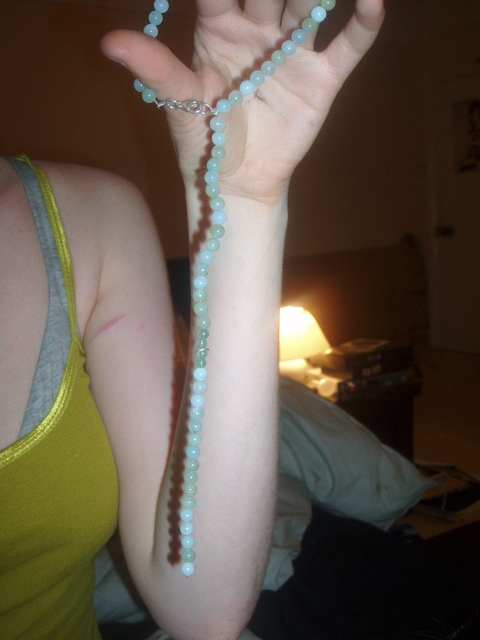

playground
The LRI playgrounds are an all-access program series ranging from playground1 (or playground) all the way up to playground 64. You can visit country by clicking here.
This is an image captured before everything went wrong:

The sky maiden is guarding the pearls of our lives.
People have tried to neutralize the repercussions in different ways. It is a topic of ongoing research, albeit it is usually classified.
The fireplace shimmers in wild unrest
In the clouds one can sin unharmed
The kitchen table covers us from horror
It helps us not discern whats best
For best is best described as foul
It separates, discards and no,
We can't afford to be unchained
Who's gonna catch you when I fall?
The fireplace is controlled pitfire
It could burn you, but does not desire
Go away, go away desire!
We are safe and hired
What is left is worthy of no applause.
Hope is a mistake.[0]
From Alien Eat World:
Things out there don’t exist. They may wave and approach and act as friend, hug and cajole and bring amends. But this is a ghost town. My last remains is [...] you.
In Imagine Janice/Imagina Jimena (from the Things You Should Ignore anthology), the narrator says Take a spike of salt and pull it over them fields. I take for granted the greatness of your sight.
Written by Josfredo Akalina
LRI full-time employee
jos@lricountry.com
La Rage